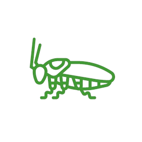

Desratización
Control de roedores con monitoreo, cebaderos y medidas preventivas para hogares, edificios, oficinas y bodegas.
Región Metropolitana y alrededores
Desratización, sanitización y desinsectación para hogares y empresas en Santiago y la Región Metropolitana. Inspección, tratamiento y seguimiento con atención rápida y enfoque preventivo para resultados duraderos.
Responde un técnico a la brevedad.
Soluciones para hogares y empresas: diagnóstico, tratamiento y recomendaciones preventivas según el tipo de plaga y el entorno.
Control de roedores con monitoreo, cebaderos y medidas preventivas para hogares, edificios, oficinas y bodegas.
Sanitizacion y desinfeccion de espacios para reducir bacterias, virus y agentes contaminantes en hogares, oficinas y comercios.
Control y eliminacion de insectos rastreros y voladores con tratamientos profesionales y seguros para cada ambiente.

Tratamiento especializado para control de chinches en dormitorios, camas y muebles, con recomendaciones para prevenir nuevos focos.
Aplicacion segura y seguimiento en cocinas, bodegas y areas criticas para controlar infestaciones persistentes.
Control segun temporada y condiciones del lugar, con enfoque preventivo para viviendas, comercios y espacios de trabajo.
Un servicio claro y transparente: diagnóstico, acción y control posterior para reducir reapariciones.
Identificamos focos, rutas, puntos criticos y nivel de infestacion para definir el tratamiento adecuado.
Aplicamos el metodo seguro y efectivo segun el tipo de plaga, el entorno y la necesidad del cliente.
Revisamos resultados y entregamos recomendaciones preventivas para disminuir nuevos focos o reinfestaciones.
Atendemos en Región Metropolitana y alrededores. Coordinamos visitas según agenda para casas, departamentos, oficinas, locales y bodegas.
Atención para viviendas, oficinas, locales comerciales y bodegas con enfoque preventivo y operativo.
Coordinación según distancia, tipo de servicio y disponibilidad del equipo técnico.
También dejamos disponibles páginas específicas por comuna para ayudarte a encontrar más rápido el servicio según tu zona.
Atención para casas, condominios, patios, locales y bodegas con enfoque correctivo y preventivo.
Ver servicio en MaipúCoordinación para departamentos, oficinas, locales y comunidades con tratamiento según el tipo de inmueble.
Ver servicio en ProvidenciaServicios para viviendas, condominios, oficinas y comercios con atención programada y seguimiento preventivo.
Ver servicio en Las CondesResolvemos dudas habituales sobre cobertura, tipo de servicio y forma de trabajo para hogares y empresas.
Realizamos control de ratones, ratas, cucarachas, hormigas, chinches, arañas, pulgas, moscas y otras plagas frecuentes en viviendas, oficinas, locales y bodegas.
Sí. Coordinamos servicios para casas, departamentos, oficinas, comercios y bodegas, con tratamientos ajustados al tipo de plaga y al entorno intervenido.
El proceso considera inspección, tratamiento y seguimiento. Además, se entregan recomendaciones preventivas para disminuir el riesgo de reaparición.
IVN Servicios atiende Santiago y distintas comunas de la Región Metropolitana, además de sectores cercanos sujetos a coordinación previa.
Escríbenos por WhatsApp o correo. También puedes dejar tu solicitud aquí y un técnico te contactará a la brevedad.